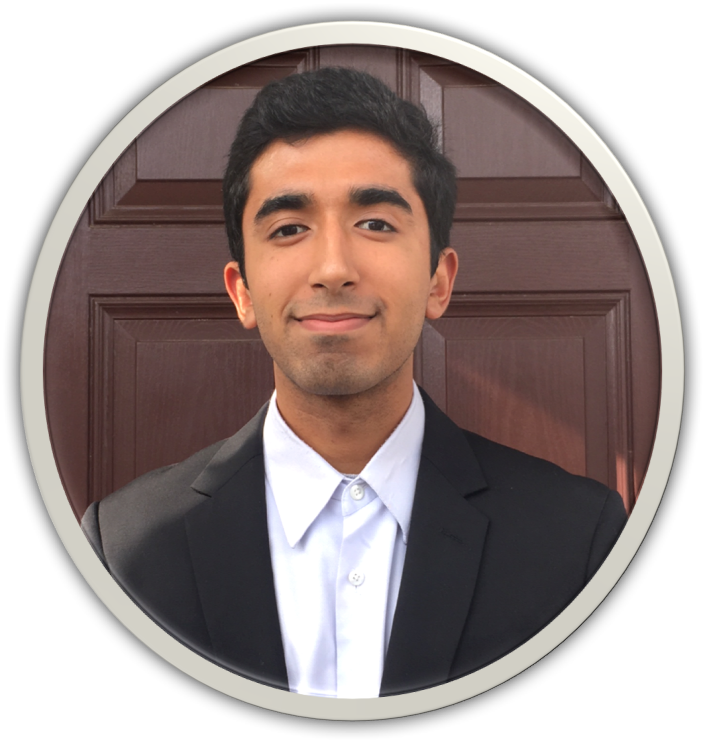
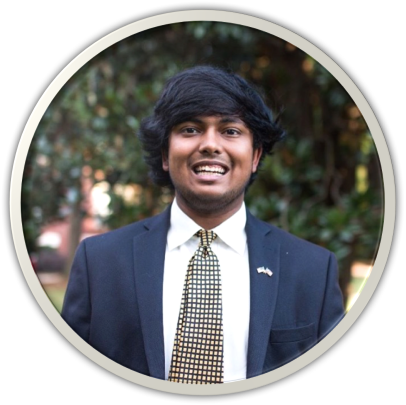

Ravi is currently a sophomore at the University of Georgia studying computer science. He is conducting research with a professor on designing and programming a health app and is interested in data science and artificial intelligence. He aims to go to graduate school and get a job where he can help overcome society's obstacles of today and tomorrow with technological solutions. In his free time, he enjoys playing tennis and basketball, coding, and reading. He also designed and programmed this website using HTML and CSS.
Linkedin: www.linkedin.com/in/ravi-parashar-39b0a7112
Email: ravi.parashar25@uga.edu

Vaibhav is a sophomore at the University of Georgia. He is a double major in political science and international affairs. Vaibhav is a staff writer for GPR and works through AIESEC to bring international students to America for internship opportunities. His interests include American politics, the Indian government, and the United States National Soccer Team. After college, he aims to get a job in Washington D.C. and go to law school.
Email: vk15981@uga.edu
We decided to make this blog so we could have an outlet for our thoughts on recent events and politics and so that we could convey our views to our peers. Let us know what you think by reaching out to us on our social media below or filling out the contact form on our home page.